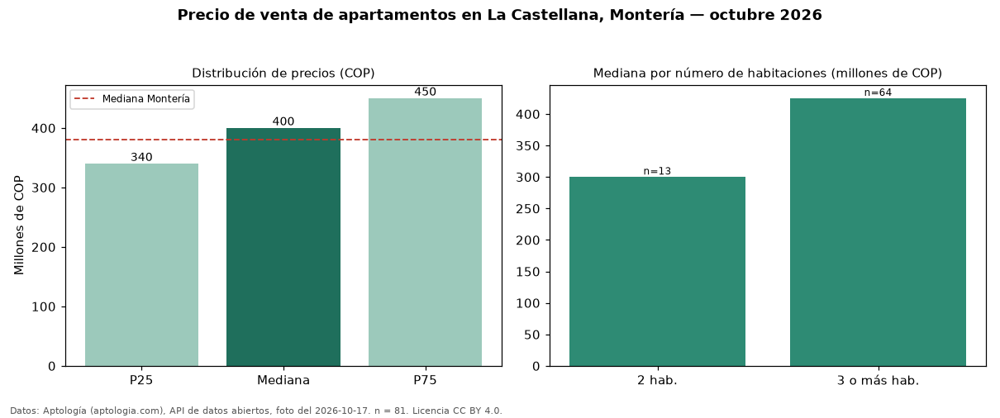

Precio de venta de apartamentos en La Castellana, Montería — octubre 2026
Con 81 avisos vigentes, el precio mediano de apartamentos en venta en La Castellana, Montería es COP 400 millones. Frente al total de Montería (COP 380 millones), el barrio está 5 % por encima. El segmento con más oferta es el de 3 o más habitaciones (64 avisos, mediana COP 425 millones); pasar de 2 habitaciones a 3 o más habitaciones sube la mediana 42 %. 60 % de los avisos incluye parqueadero, y su mediana (COP 400 millones) es prácticamente igual a la general. El aviso más barato pide COP 200 millones y el más caro COP 1,40 mil millones. 46 % de los anunciantes publica un teléfono de contacto. La dispersión es baja: el cuartil superior (COP 450 millones) es 1,3 veces el inferior (COP 340 millones). Datos: Aptología (aptologia.com), API de datos abiertos, licencia CC BY 4.0 — https://www.aptologia.com/venta/monteria/la-castellana. Archivos: PDF de 2 páginas, CSV con las cifras y gráfica PNG.

| Avisos únicos | 81 |
|---|---|
| Percentil 25 | COP 340.000.000 |
| Mediana | COP 400.000.000 |
| Percentil 75 | COP 450.000.000 |
Fuente: avisos vigentes de portales inmobiliarios recopilados por Aptología, deduplicados (mínimo 30 avisos únicos por celda). Precios pedidos, no cerrados. Fecha: 2026-10-18.